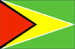

{kind=link}


![[Country map of Guyana]](../maps/gy-map.jpg)
| Guyana |  |
|
| | |
| Introduction |
Background: Guyana achieved independence from the UK in 1966 and became a republic in 1970. In 1989 Guyana launched an Economic Recovery Program, which marked a dramatic reversal from a state-controlled, socialist economy towards a more open, free market system. Results through the first decade have proven encouraging.
| Geography |
Location: Northern South America, bordering the North Atlantic Ocean, between Suriname and Venezuela
Geographic coordinates: 5 00 N, 59 00 W
Map references: South America
Area:
total:
214,970 sq km
land:
196,850 sq km
water:
18,120 sq km
Area - comparative: slightly smaller than Idaho
Land boundaries:
total:
2,462 km
border countries:
Brazil 1,119 km, Suriname 600 km, Venezuela 743 km
Coastline: 459 km
Maritime claims:
continental shelf:
200 nm or to the outer edge of the continental margin
exclusive fishing zone:
200 nm
territorial sea:
12 nm
Climate: tropical; hot, humid, moderated by northeast trade winds; two rainy seasons (May to mid-August, mid-November to mid-January)
Terrain: mostly rolling highlands; low coastal plain; savanna in south
Elevation extremes:
lowest point:
Atlantic Ocean 0 m
highest point:
Mount Roraima 2,835 m
Natural resources: bauxite, gold, diamonds, hardwood timber, shrimp, fish
Land use:
arable land:
2%
permanent crops:
0%
permanent pastures:
6%
forests and woodland:
84%
other:
8% (1993 est.)
Irrigated land: 1,300 sq km (1993 est.)
Natural hazards: flash floods are a constant threat during rainy seasons
Environment - current issues: water pollution from sewage and agricultural and industrial chemicals; deforestation
Environment - international agreements:
party to:
Biodiversity, Climate Change, Desertification, Endangered Species, Law of the Sea, Ozone Layer Protection, Ship Pollution, Tropical Timber 83, Tropical Timber 94
signed, but not ratified:
none of the selected agreements
| People |
Population:
697,286
note:
estimates for this country explicitly take into account the effects of excess mortality due to AIDS; this can result in lower life expectancy, higher infant mortality and death rates, lower population and growth rates, and changes in the distribution of population by age and sex than would otherwise be expected (July 2000 est.)
Age structure:
0-14 years:
29% (male 102,463; female 98,492)
15-64 years:
66% (male 232,857; female 229,598)
65 years and over:
5% (male 15,170; female 18,706) (2000 est.)
Population growth rate: -0.1% (2000 est.)
Birth rate: 17.94 births/1,000 population (2000 est.)
Death rate: 8.42 deaths/1,000 population (2000 est.)
Net migration rate: -10.48 migrant(s)/1,000 population (2000 est.)
Sex ratio:
at birth:
1.05 male(s)/female
under 15 years:
1.04 male(s)/female
15-64 years:
1.01 male(s)/female
65 years and over:
0.81 male(s)/female
total population:
1.01 male(s)/female (2000 est.)
Infant mortality rate: 39.07 deaths/1,000 live births (2000 est.)
Life expectancy at birth:
total population:
64.04 years
male:
61.08 years
female:
67.15 years (2000 est.)
Total fertility rate: 2.11 children born/woman (2000 est.)
Nationality:
noun:
Guyanese (singular and plural)
adjective:
Guyanese
Ethnic groups: East Indian 51%, black 30%, mixed 14%, Amerindian 4%, white and Chinese 1%
Religions: Christian 50%, Hindu 33%, Muslim 9%, other 8%
Languages: English, Amerindian dialects, Creole, Hindi, Urdu
Literacy:
definition:
age 15 and over has ever attended school
total population:
98.1%
male:
98.6%
female:
97.5% (1995 est.)
| Government |
Country name:
conventional long form:
Co-operative Republic of Guyana
conventional short form:
Guyana
former:
British Guiana
Data code: GY
Government type: republic within the Commonwealth
Capital: Georgetown
Administrative divisions: 10 regions; Barima-Waini, Cuyuni-Mazaruni, Demerara-Mahaica, East Berbice-Corentyne, Essequibo Islands-West Demerara, Mahaica-Berbice, Pomeroon-Supenaam, Potaro-Siparuni, Upper Demerara-Berbice, Upper Takutu-Upper Essequibo
Independence: 26 May 1966 (from UK)
National holiday: Republic Day, 23 February (1970)
Constitution: 6 October 1980
Legal system: based on English common law with certain admixtures of Roman-Dutch law; has not accepted compulsory ICJ jurisdiction
Suffrage: 18 years of age; universal
Executive branch:
chief of state:
President Bharrat JAGDEO (since NA August 1999); note - assumed presidency after resignation of President JAGAN
head of government:
Prime Minister Samuel HINDS (since NA December 1997)
cabinet:
Cabinet of Ministers appointed by the president, responsible to the legislature
elections:
president elected by the majority party in the National Assembly following legislative elections, which must be held at least every five years; elections last held 15 December 1997 (next to be held by January 2001); prime minister appointed by the president
Legislative branch:
unicameral National Assembly (65 seats, 53 popularly elected; members serve five-year terms)
elections:
last held 15 December 1997 (next to be held by January 2001; this date was part of a negotiated settlement between the two main political parties following a dispute over the December elections)
election results:
percent of vote by party - PPP 54%, PNC 41%, AFG 1%, TUF 1%; seats by party - PPP 29, PNC 22, AFG 1, TUF 1
Judicial branch: Supreme Court of Judicature; Judicial Court of Appeal; High Court
Political parties and leaders: Alliance for Guyana or AFG [Rupert ROOPNARINE]; Democratic Labor Movement or DLM [Paul TENNASSEE]; For a Good and Green Guyana or GGG [Hamilton GREEN]; Guyana Democratic Party or GDP [Asgar ALLY]; Guyana Labor Party or GLP [leader NA]; Guyanese Organization for Liberty and Democracy Party or GOLD [Anthony MEKDECI]; National Democratic Front or NDF [Joseph BACCHUS]; National Republican Party or NRP [Robert GANGADEEN]; People's Democratic Movement or PDM [Llewellyn JOHN]; People's National Congress or PNC [Hugh Desmond HOYTE]; People's Progressive Party or PPP [leader NA]; The United Force or TUF [Manzoor NADIR]; Working People's Alliance or WPA [leader NA]
Political pressure groups and leaders:
Civil Liberties Action Committee or CLAC; Guyana Council of Indian Organizations or GCIO; Trades Union Congress or TUC
note:
the GCIO and the CLAC are small and active but not well organized
International organization participation: ACP, C, Caricom, CCC, CDB, ECLAC, FAO, G-77, IADB, IBRD, ICAO, ICFTU, ICRM, IDA, IFAD, IFC, IFRCS, ILO, IMF, IMO, Intelsat (nonsignatory user), Interpol, IOC, ISO (subscriber), ITU, LAES, NAM, OAS, OPANAL, OPCW, PCA, UN, UNCTAD, UNESCO, UNIDO, UPU, WCL, WFTU, WHO, WIPO, WMO, WTrO
Diplomatic representation in the US:
chief of mission:
Ambassador Dr. Ali Odeen ISHMAEL
chancery:
2490 Tracy Place NW, Washington, DC 20008
telephone:
[1] (202) 265-6900
consulate(s) general:
New York
Diplomatic representation from the US:
chief of mission:
Ambassador James F. MACK
embassy:
99-100 Young and Duke Streets, Kingston, Georgetown
mailing address:
P. O. Box 10507, Georgetown
telephone:
[592] (2) 54900 through 54909, 57960 through 57969
FAX:
[592] (2) 59497
Flag description: green, with a red isosceles triangle (based on the hoist side) superimposed on a long, yellow arrowhead; there is a narrow, black border between the red and yellow, and a narrow, white border between the yellow and the green
| Economy |
Economy - overview: Severe drought and political turmoil contributed to Guyana's negative growth of -1.8% for 1998 following six straight years of growth of 5% or better. Growth came back to a positive 1.8% in 1999. Underlying growth factors have included expansion in the key agricultural and mining sectors, a more favorable atmosphere for business initiative, a more realistic exchange rate, a moderate inflation rate, and continued support by international organizations. President JAGDEO, the former finance minister, is taking steps to reform the economy, including drafting an investment code and restructuring the inefficient and unresponsive public sector. Problems include a shortage of skilled labor and an inadequate and poorly maintained transportation system. Also, electricity has been in short supply; the privatization of the sector in August 1999 is expected to improve prospects. The government must persist in efforts to manage its sizable external debt and extend its privatization program.
GDP: purchasing power parity - $1.86 billion (1999 est.)
GDP - real growth rate: 1.8% (1999 est.)
GDP - per capita: purchasing power parity - $2,500 (1999 est.)
GDP - composition by sector:
agriculture:
34.7%
industry:
32.5%
services:
32.8% (1998 est.)
Population below poverty line: NA%
Household income or consumption by percentage share:
lowest 10%:
NA%
highest 10%:
NA%
Inflation rate (consumer prices): 5.5% (1999 est.)
Labor force: 245,492 (1992)
Labor force - by occupation: agriculture NA%, industry NA%, services NA%
Unemployment rate: 12% (1992 est.)
Budget:
revenues:
$220.1 million
expenditures:
$286.4 million, including capital expenditures of $86.6 million (1998)
Industries: bauxite, sugar, rice milling, timber, fishing (shrimp), textiles, gold mining
Industrial production growth rate: 7.1% (1997 est.)
Electricity - production: 325 million kWh (1998)
Electricity - production by source:
fossil fuel:
98.46%
hydro:
1.54%
nuclear:
0%
other:
0% (1998)
Electricity - consumption: 302 million kWh (1998)
Electricity - exports: 0 kWh (1998)
Electricity - imports: 0 kWh (1998)
Agriculture - products: sugar, rice, wheat, vegetable oils; beef, pork, poultry, dairy products; forest and fishery potential not exploited
Exports: $574 million (f.o.b., 1999 est.)
Exports - commodities: sugar, gold, bauxite/alumina, rice, shrimp, molasses, rum, timber
Exports - partners: US 25%, Canada 24%, UK 19%, Netherlands Antilles 11%, Jamaica 5% (1998)
Imports: $620 million (c.i.f., 1999 est.)
Imports - commodities: manufactures, machinery, petroleum, food
Imports - partners: US 28%, Trinidad and Tobago 21%, Netherlands Antilles 14%, UK 7%, Japan 5% (1998)
Debt - external: $1.4 billion (1998)
Economic aid - recipient: $84 million (1995), Heavily Indebted Poor Country Initiative (HIPC) $253 million (1997)
Currency: 1 Guyanese dollar (G$) = 100 cents
Exchange rates: Guyanese dollars (G$) per US$1 - 180.4 (December 1999), 178.0 (1999), 150.5 (1998), 142.4 (1997), 140.4 (1996), 142.0 (1995)
Fiscal year: calendar year
| Communications |
Telephones - main lines in use: 45,000 (1995)
Telephones - mobile cellular: 1,243 (1995)
Telephone system:
fair system for long-distance calling
domestic:
microwave radio relay network for trunk lines
international:
tropospheric scatter to Trinidad; satellite earth station - 1 Intelsat (Atlantic Ocean)
Radio broadcast stations: AM 3, FM 3, shortwave 1 (1998)
Radios: 420,000 (1997)
Television broadcast stations: 3 (one public station; two private stations which relay US satellite services) (1997)
Televisions: 46,000 (1997)
Internet Service Providers (ISPs): 2 (1999)
| Transportation |
Railways:
total:
187 km (all dedicated to ore transport)
standard gauge:
139 km 1.435-m gauge
narrow gauge:
48 km 0.914-m gauge
Highways:
total:
7,970 km
paved:
590 km
unpaved:
7,380 km (1996 est.)
Waterways: 5,900 km total of navigable waterways; Berbice, Demerara, and Essequibo Rivers are navigable by oceangoing vessels for 150 km, 100 km, and 80 km, respectively
Ports and harbors: Bartica, Georgetown, Linden, New Amsterdam, Parika
Merchant marine:
total:
1 ship (1,000 GRT or over) totaling 1,023 GRT/1,972 DWT
ships by type:
cargo 1 (1999 est.)
Airports: 51 (1999 est.)
Airports - with paved runways:
total:
5
1,524 to 2,437 m:
2
914 to 1,523 m:
1
under 914 m:
2 (1999 est.)
Airports - with unpaved runways:
total:
46
1,524 to 2,437 m:
2
914 to 1,523 m:
7
under 914 m:
37 (1999 est.)
| Military |
Military branches: Guyana Defense Force (GDF; includes Ground Forces, Coast Guard, and Air Corps), Guyana People's Militia (GPM), Guyana National Service (GNS), Guyana Police Force
Military manpower - availability:
males age 15-49:
203,742 (2000 est.)
Military manpower - fit for military service:
males age 15-49:
153,530 (2000 est.)
Military expenditures - dollar figure: $7 million (FY94)
Military expenditures - percent of GDP: 1.7% (FY94)
| Transnational Issues |
Disputes - international: all of the area west of the Essequibo River claimed by Venezuela; Suriname claims area between New (Upper Courantyne) and Courantyne/Kutari [Koetari] Rivers (all headwaters of the Courantyne)
Illicit drugs: transshipment point for narcotics from South America - primarily Venezuela - to Europe and the US; producer of cannabis